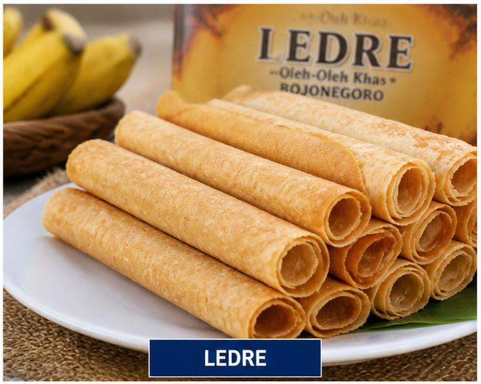
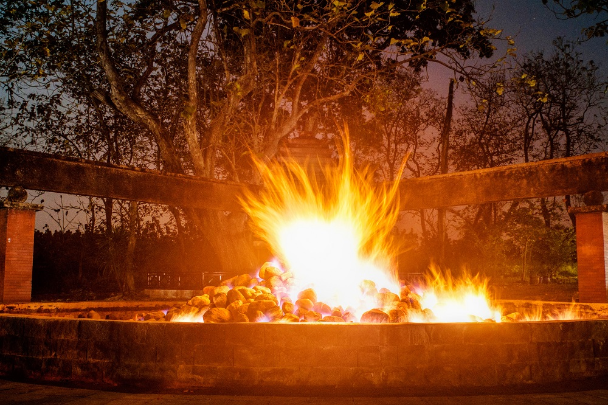
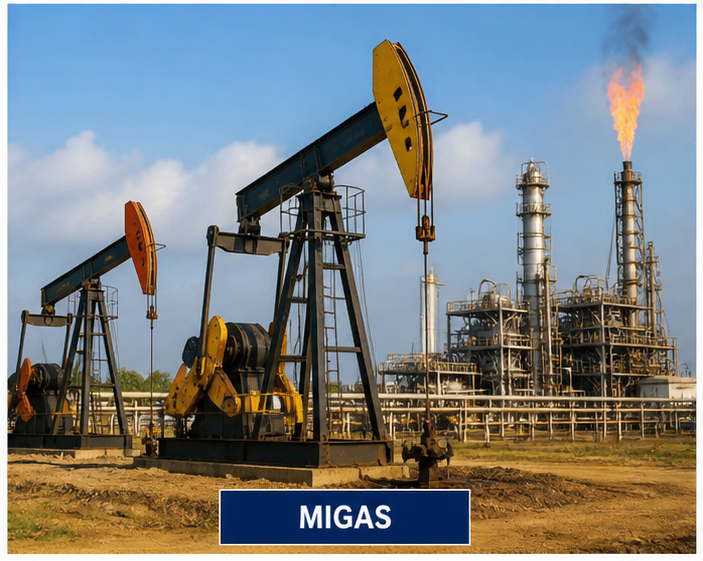
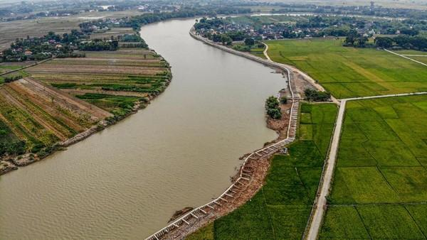
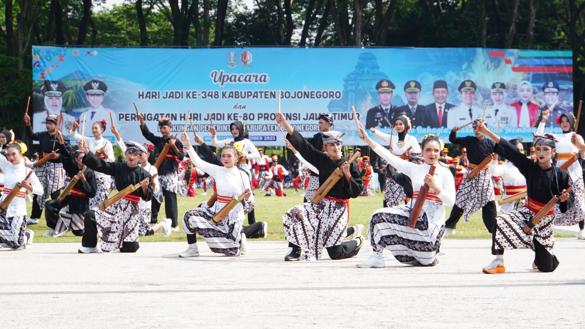

Keunikan Daerah Bojonegoro
Kabupaten Bojonegoro merupakan salah satu kabupaten di Provinsi Jawa Timur yang memiliki kekayaan budaya, sumber daya alam, wisata, serta tradisi masyarakat yang sangat beragam. Bojonegoro terletak di bagian barat Provinsi Jawa Timur dan dilalui oleh Sungai Bengawan Solo yang menjadi sungai terpanjang di Pulau Jawa.
Selain dikenal sebagai daerah penghasil minyak dan gas bumi terbesar di Indonesia, Bojonegoro juga memiliki berbagai makanan khas, wisata alam, budaya tradisional, serta hasil hutan yang menjadi identitas daerah.

Ledre
Ledre merupakan makanan khas Bojonegoro yang sangat terkenal dan menjadi oleh-oleh favorit wisatawan. Ledre dibuat dari bahan utama pisang yang diolah menjadi makanan tipis, renyah, dan memiliki aroma khas.
Cita rasa manis serta teksturnya yang ringan membuat ledre menjadi camilan tradisional yang masih bertahan hingga sekarang. Makanan ini menjadi salah satu simbol kuliner khas Bojonegoro.

Kayangan Api
Kayangan Api merupakan wisata alam terkenal di Bojonegoro berupa api abadi yang tidak pernah padam meskipun terkena hujan. Tempat ini berada di kawasan hutan jati Kecamatan Ngasem.
Kayangan Api memiliki nilai sejarah dan budaya yang tinggi karena sering digunakan sebagai tempat pengambilan api untuk acara nasional maupun tradisi budaya tertentu.
Selain menjadi objek wisata, tempat ini juga menjadi bukti adanya kandungan gas alam di wilayah Bojonegoro.

Minyak dan Gas Bumi (Migas)
Bojonegoro dikenal sebagai salah satu daerah penghasil minyak dan gas bumi terbesar di Indonesia. Sektor migas menjadi salah satu sumber utama perkembangan ekonomi daerah.
Keberadaan ladang minyak besar seperti Blok Cepu memberikan dampak besar terhadap pembangunan infrastruktur, pendidikan, dan kesejahteraan masyarakat.
Karena potensi migas yang besar, Bojonegoro sering dijuluki sebagai kota penghasil energi nasional.

Kayu Jati Bojonegoro
Bojonegoro memiliki hutan jati yang sangat luas dan terkenal menghasilkan kayu jati berkualitas tinggi. Kayu jati Bojonegoro banyak dimanfaatkan untuk industri mebel dan kerajinan kayu.
Kualitas kayu yang kuat, tahan lama, dan memiliki serat indah membuat kayu jati Bojonegoro terkenal hingga berbagai daerah di Indonesia.
Hutan jati juga menjadi bagian penting dalam menjaga keseimbangan lingkungan dan sumber ekonomi masyarakat.

Sungai Bengawan Solo
Sungai Bengawan Solo merupakan sungai terpanjang di Pulau Jawa yang melintasi Kabupaten Bojonegoro. Sungai ini memiliki peran penting dalam kehidupan masyarakat sebagai sumber air, irigasi pertanian, dan aktivitas ekonomi.
Selain memiliki manfaat ekonomi, Bengawan Solo juga memiliki nilai sejarah dan budaya yang melekat kuat dalam kehidupan masyarakat Jawa.

Budaya dan Tradisi
Masyarakat Bojonegoro masih menjaga berbagai budaya dan tradisi daerah seperti kesenian tayub, wayang kulit, dan tradisi sedekah bumi.
Tradisi tersebut menjadi bagian penting dalam mempererat hubungan sosial masyarakat serta melestarikan warisan budaya lokal.
Nilai gotong royong dan kekeluargaan masih sangat kuat dalam kehidupan masyarakat Bojonegoro hingga saat ini.